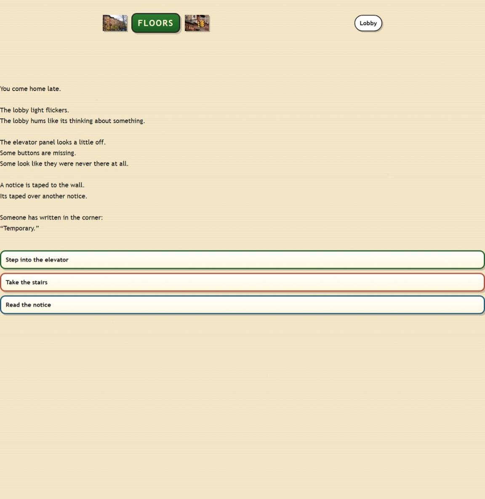
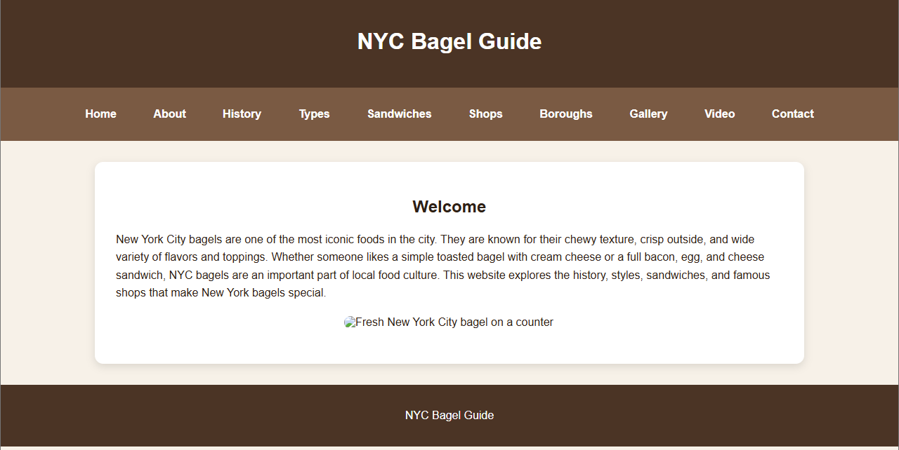
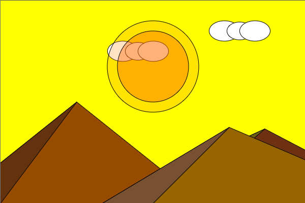
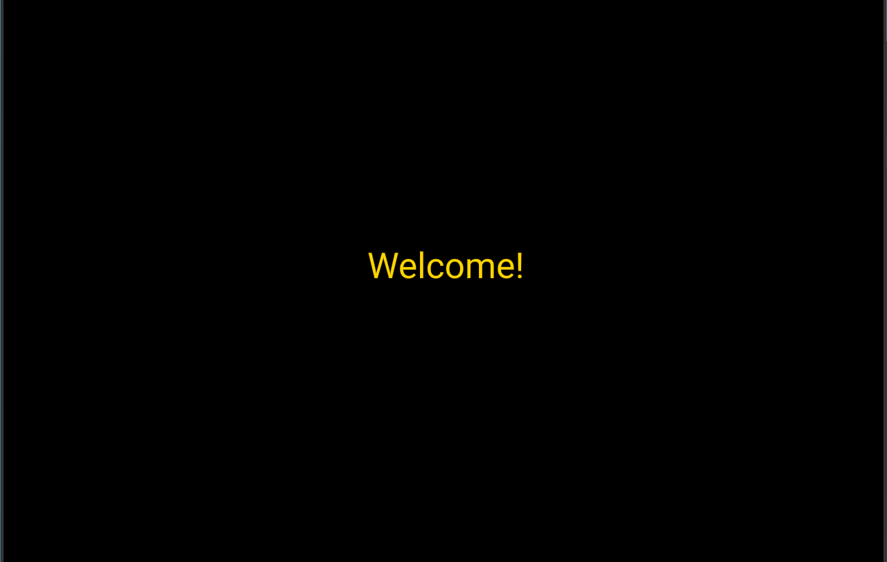

Portfolio work
Each card includes a screenshot, short project description and link to the live project.

Text Game
An interactive storytelling project using choices and branching paths to guide the player through a narrative experience.
Interactive Story
Choices

Dreamweaver Website
A multi-page NYC bagel guide built with navigation, images, video, links and consistent styling.
Dreamweaver
HTML/CSS

p5.js Assignment
A creative coding project exploring how code can be used for visual expression, animation and composition.
p5.js
Creative Coding

A-Frame 360 Experience
A browser-based immersive environment exploring space, movement, perspective and user navigation.
A-Frame
360 Experience